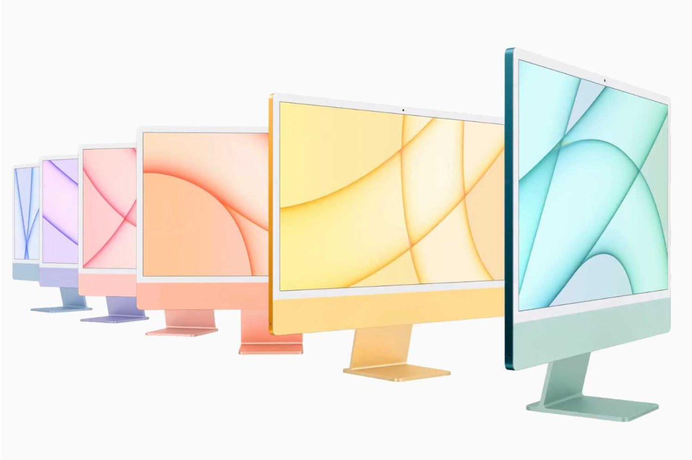

Macbook
Les nouveaux MacBook Pro sont disponibles avec les deux nouvelles puces d'Apple selon vos besoins de puissance. Allez-vous opter pour la M1 Pro ? Ou le nec plus ultra avec la puce M1 Max ? Votre choix impactera le tarif puisque ces deux versions sont proposées à différents prix selon la version dont vous avez besoin. Comptez au moins 2249 € pour la version la plus abordable, à savoir 14", 512 Go d'espace de stockage et un CPU à 8 cœurs.
iMac
L'iMac, dont l'esthétique n'avait pas évolué depuis un bon moment, s'offre un nouveau look. Ce qui frappe, d'abord, c'est la couleur : l'ordinateur est désormais disponible en sept coloris pastel. On remarque également qu'il s'est bien affiné, son épaisseur étant descendue à 11,5 mm, une finesse impressionnante pour une machine tout-en-un. L'écran profite désormais d'une diagonale de 24 pouces, contre 21,5 auparavant. Enfin presque, un petit astérisque notifiant que la taille réelle de la dalle est de 23,5 pouces. Apple n'a pas lésiné sur la qualité avec un modèle 4,5K, dont la luminosité atteindrait 500 cd/m2. La technologie TrueTone offre la possibilité d'ajuster la balance des blancs et la luminosité automatiquement, et le traitement antireflet de la vitre s'avère appréciable.
Mac pro

Le Mac Pro est une station de travail 64 bits d'Apple. Il est présenté pour la première fois lors de la WWDC d’août 2006. Il remplace le Power Mac G5 dont il reprend le design, et signe la disparition de la dénomination Power Mac parmi les produits Apple. En 2013, Apple présente lors de la WWDC une nouvelle version avec des composants mis à jour et un design de l'appareil entièrement repensé. En 2019, Apple présente lors de la WWDC une nouvelle version des Mac Pro, avec des composants très puissants et une tour modulaire. Un écran nommé Pro Display XDR (6K et 32 pouces) est présenté en complément.
Mac mini

Le Mac mini est l’ordinateur de bureau ultra compact d’Apple. Présenté pour la première fois en 2005, ce dernier a connu plusieurs versions, du Power PC G4 à l’Intel Core puis la version Unibody en aluminium avec processeurs Core 2 Duo puis Core i5 et i7 dont le modèle actuel est l’héritier direct. C’est l’ordinateur le plus abordable d’Apple depuis sa sortie, même s’il faut forcément lui ajouter un écran ainsi qu’un clavier et une souris – ou un Trackpad.Avec la version Apple M1 présentée le 10 novembre 2020, Apple en est à sa cinquième génération de Mac mini, et il s’agit de la première basée sur la nouvelle puce Apple Silicon pour Mac, la fameuse puce Apple M1. Avec sa puce M1, Apple a dévoilé « la prochaine génération de Mac », qui seront progressivement mis à jour sur une période de 2 ans, soit jusqu’à fin 2022. À cette date, Apple devrait avoir terminé sa transition en passant de l’architecture x86 avec puces Intel à l’architecture ARM avec ses propres puces Apple Silicon.